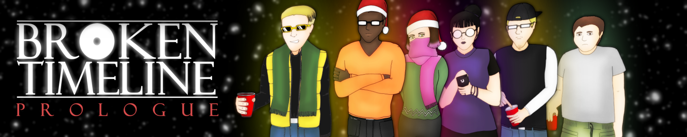

View all by Papeero
Papeero
Follow Papeero
Follow
Following Papeero
Following
Add To Collection
Collection
Comments
Devlog

Broken Timeline - Prologue
←
Return to Broken Timeline - Prologue
Devlog
Official Poster for the Broken Timeline Chapter I
June 24, 2020
by
Papeero
#papeero, #Broken Timeline, #visual novel, #star gamers
Continue reading